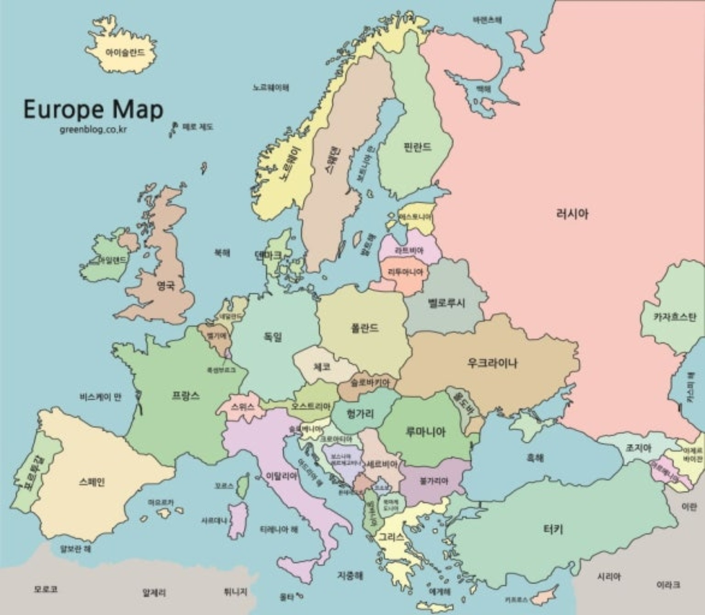
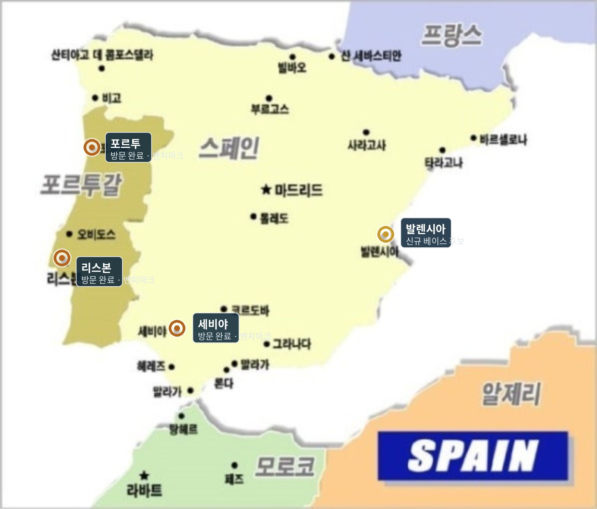
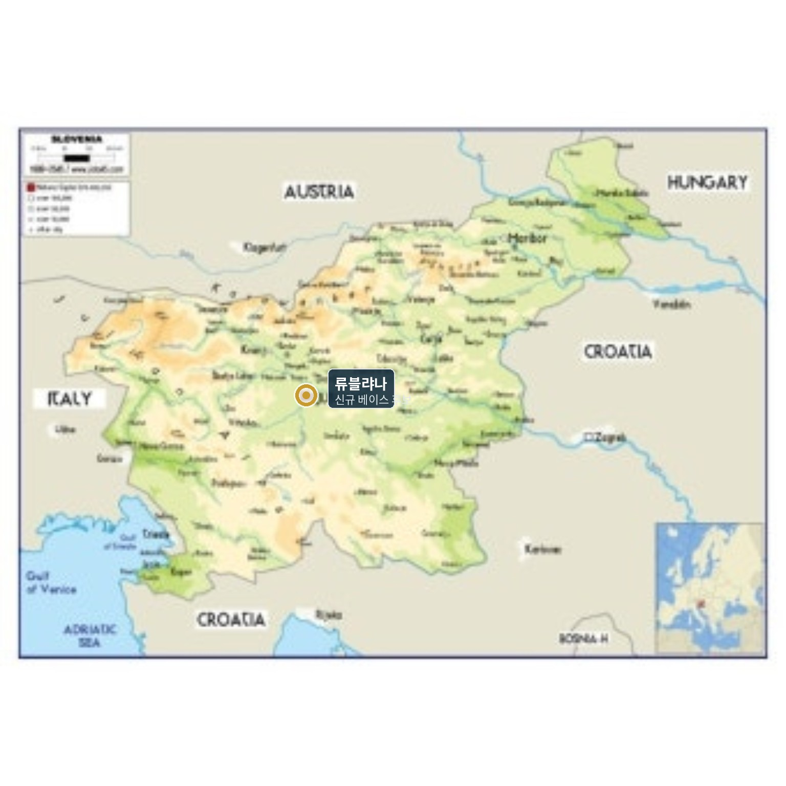
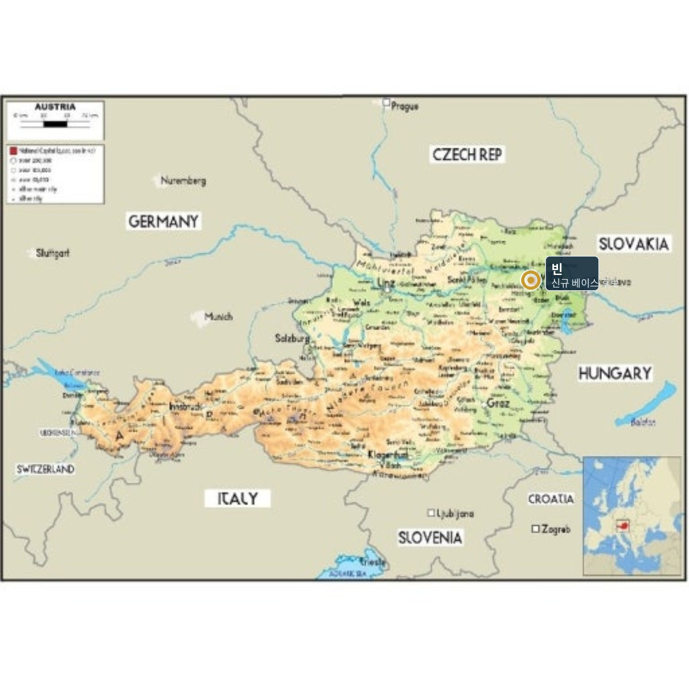

계절살이의 목적과 확정되지 않은 가설
생활의 중심은 한국
영주권·시민권 취득이나 상시 해외 이주가 아니라, 매년 상황에 맞춰 일정 기간 생활해보는 방식입니다.
봄 남유럽 · 가을 중부유럽
발렌시아·볼로냐를 먼저 알아보고 류블랴나·빈 등을 대안으로 평가합니다. 어느 도시도 아직 최종 거점이 아닙니다.
건강·예산·동행자 우선
도시를 모두 방문하는 것이 목표가 아닙니다. 부담이 있으면 기간을 줄이거나 익숙한 곳을 다시 방문합니다.
후보 도시를 실제 지도에서 살펴보기
기존 자료에서 제공된 지도 이미지를 보존했습니다. 지도 마커는 상대적 위치를 보는 참고용이며 실제 교통 경로, 지도 이미지의 저작권·재사용 허락, 최신 지리정보는 게시 전 별도로 확인해야 합니다.




발렌시아 · 스페인
시장·해변·산책, 현지 주거 환경을 집중 확인합니다.
- 동네 후보: Ruzafa, El Cabanyal, Benimaclet
- 점검: 습도, 폭염, 침수 위험과 냉방, 보행 동선
- 답사 후보 계절: 3~5월(실제 월별 기후 재확인)
볼로냐 · 이탈리아
걷기 좋은 구도심과 기차여행, 음식·장보기를 조사합니다.
- 동네 후보: Centro Storico, Saragozza, Santo Stefano
- 점검: 9~10월 주거 수요·습도·계단·소음
- 근교: 모데나, 파르마, 피렌체
이미 방문해본 도시를 비교 기준으로 활용하기
포르투·리스본·세비야 등 이미 방문했을 수 있는 도시들은 '관광 만족도' 기록과 '한 달 생활의 편안함'을 별도 척도로 평가합니다. 현재 도시 추천은 실제 현지 임대가격·기후 실측치를 확정한 순위가 아닙니다.
준비부터 반복 체류까지 — 조건부 로드맵
주거 예산, 계절, 최대 보행시간, 동행자 선호, 음식 조건을 정리합니다. 외국어 학습은 생활 회화 위주로 시작합니다.
관광보다 실제 시장·마트·병원·교통·숙소 상태를 체험합니다. 방학·휴가 답사는 계절이 다를 수 있으므로 기후 평가는 보류합니다.
하루 생활비·숙면·걷기·지루함·장보기 편의·긴급 대처를 점검합니다. 답사만으로 장기 거점을 확정하지 않습니다.
함께 지낼 사람의 일정, 은퇴 시점, 예산, 건강 상황이 맞을 때만 확대합니다. 개인의 특정 퇴직 연도는 설정하지 않습니다.
체류 규정·실견적·여행보험·기후자료·계절 일정 검증 후 다음 여행을 결정합니다.
동행 방식 A · 함께 시작
양쪽 일정이 맞을 때 2인으로 답사하고 장기체류를 시작합니다. 생활 적합성을 함께 검증할 수 있습니다.
동행 방식 B · 먼저 혼자 실험
한 사람이 먼저 2~5주를 시험하고, 동행자는 일부 기간 합류할 수 있습니다. 단독 체류 결과로 공동 적합성을 확정하지 않습니다.
동행 방식 C · 짧게 반복
일정이 맞지 않으면 매년 1~3주 여행으로 경험만 축적하고, 본격적인 계절살이는 뒤로 미룹니다.
가치 판단
미리 정한 목적에 맞지 않으면 후보 도시를 변경·재방문·축소합니다. 여행을 이어가지 않는 것도 합리적 선택입니다.
부부·동행자 포함 실제 여행 예산 계산기
비용은 조사일·자료 출처가 없는 확정 시세가 아니라 수정 가능한 계획값입니다. 숙박·식비·교통·보험과 한국에서 계속 나가는 비용을 별도로 계산합니다.
월 숙소비와 한국 고정비는 계획상 30박당 1개월로 환산합니다. 항공료·보증금 등은 따로 구분해야 하며, 체류 기간에 따른 월 할인·성수기 가격은 직접 입력하세요.
실시간 비용 요약
미래 환율은 예측하지 않습니다. 입력한 환율을 고정한 단순 시나리오이며 실제 구매력·숙박비 상승률과 다를 수 있습니다.
숙박료 조사할 때 반드시 구분할 항목
1박/월세 표시금액, 청소비, 관광세, 공과금, 보증금, 결제 수수료, 환불 가능 최종일, 예약 플랫폼 외 별도 결제 요구 여부. 환급 가능한 보증금은 최종 비용이 아니라 일시적 현금 필요액으로 따로 관리합니다.
예산이 초과되면 조정할 우선순위
출발 전 취소가 어려운 예약을 하기 전에 ① 체류기간 ② 숙소 위치·규모 ③ 근교여행 빈도 ④ 연간 체류 횟수 순으로 조정안을 비교합니다. 의료·비상 귀국비를 줄이는 방식으로 맞추지 않습니다.
솅겐 90일/180일 체류일수 확인
입출국 기간 입력
일반 단기체류 한도에 대한 계획 보조 계산기입니다. 법적 체류 권한을 판정하지 않으며 출발 전 EU 공식 계산기 및 목적 국가의 당국 안내와 대조하세요. D비자·거주허가, 양자협정은 자동 처리하지 않습니다.
EU 공식 솅겐 단기체류 계산기 ↗솅겐 지역의 혼동 방지
스페인·이탈리아·슬로베니아·오스트리아·포르투갈 외에 크로아티아·불가리아·루마니아도 솅겐에 포함됩니다. 크로아티아로 넘어가는 일정은 솅겐 일수를 리셋하지 않습니다.
비솅겐 국가 활용
영국·아일랜드·몬테네그로·튀르키예·알바니아 등은 각자 입국 조건과 체류 규정이 있습니다. 비솅겐 지역 체류일은 일반적으로 솅겐 체류일에서 제외되지만 과거 솅겐 날짜는 계속 180일 창에 남습니다.
EES · ETIAS
2026년 10월 기준 EES는 가동 중이며, ETIAS는 공식 사이트의 시행 공지를 확인해야 합니다. 미래 여행의 적용 제도는 여행 직전에 반드시 재확인합니다.
ETIAS 공식 안내 ↗국가별 별도 장기비자
장기체류 비자나 체류허가는 일반 단기체류 계산과 법적 기준이 다릅니다. 허가된 국가·목적·기간·다른 솅겐국 방문 조건, 세금상 거주자 문제를 관련 기관에 확인합니다.
좋은 도시보다 살기 좋은 숙소와 동네
숙소 필수조건
생활권 확인 항목
7일 생활 실사
| 1일 | 숙소 주변 30분 걷고 교통 파악 |
|---|---|
| 2일 | 시장·마트에서 며칠치 식재료 구입 |
| 3일 | 병원·약국의 위치와 이동 동선 확인 |
| 4일 | 대중교통만 이용해 일상생활 |
| 5일 | 관광하지 않고 평범한 하루 보내기 |
| 6일 | 산책·독서·어학·문화 활동 시도 |
| 7일 | 불편·비용·만족도 기록 및 다음 주 조정 |
주간 생활 리듬 제안
평일: 아침 장보기, 어학 학습·독서, 오후 공원·해변 산책, 저녁 직접 요리하거나 공연·전시 관람.
주말: 근교 소도시를 기차로 이동하거나 1박 2일 여행. 매주 반드시 떠나야 할 필요는 없습니다.
지역 교류: 도시 공식 문화강좌·체육 프로그램, Meetup 등 지역 모임은 비용·언어·안전성 확인 후 선택합니다.
숙소 중심 일상에도 만족할 수 있는지가 관광지 숫자보다 중요합니다.
의료·보험·비상 귀국 준비
출발 전 건강·보험 확인
비상 상황 대응 순서
1. 위험 상황이면 현지 응급 연락망에 전화.
2. 보험사 지원 센터와 연락하고 진료·병원 예약 절차 확인.
3. 여권·처방자료·보험증권 등 필요한 자료 제시.
4. 진료 기록·영수증을 안전하게 보관하고 가족에게 상황 공유.
5. 입원·장기치료 등 상황에서는 귀국 조건과 동행자 지원을 점검.
공개 웹에는 여권번호, 병력, 보험증권 번호, 실명 연락처를 기록하지 마세요. 개인 자료는 기기에 별도로 안전하게 보관하세요.
도시 비교와 부부·동행자별 체감 평가
먼저 필수조건을 검토하고, 통과한 도시끼리 선호 점수를 비교하세요. 두 사람이 다른 점수를 주면 평균만 보지 않고 차이를 함께 살펴봅니다. 다음 평가는 100점 만점의 예시 가중치입니다.
점수는 각 영역을 1~5점 평가해 가중치로 환산합니다. 미평가 항목은 0점이 아니라 '평가 보류'로 처리합니다.
평가의 세 가지 관문
1. 필수 통과 여부 — 적정 숙소, 안전·의료, 법적 체류 조건, 예상 예산, 동행자 동의
2. 분야별 선호 점수 — 주거, 걷기, 기후, 생활비 등 서로 다른 가중치 반영
3. 다시 살고 싶은가? — 점수에 포함하지 않는 별도 최종 질문
저장한 평가는 이 브라우저에만 남습니다. 자동 동기화되지 않으므로 JSON 백업을 활용하세요. 공개 저장소에 개인 기록을 올리지 마세요.
진행·축소·보류 의사결정 기준 예시
진행: 필수조건 모두 통과하고 동행자 모두 동의. 축소: 생활 스트레스나 비용이 커서 단축 체류가 적합. 보류: 건강·예산·법규 확인이 끝나지 않음. 중단: 숙소 안전 문제, 의료 대응 곤란 또는 동행자 반대 등 중대한 사유가 있음. 이 기준은 스스로 조정하는 계획 도구입니다.
공식 자료·확인해야 할 정보
비용·기후·동네 조사
Copernicus — 유럽 기후 자료OpenStreetMap — 지도 확인Booking.com — 날짜별 실제 숙소 견적 조사Airbnb — 체류기간별 숙소 조건 비교민간 예약 사이트 정보는 해당 날짜 실제 견적과 환불 조건을 확인한 뒤 기록하세요. 이 웹은 예약 제휴·판매 기능이 없습니다.
공개 배포용 문서: 실명, 학교명, 개인 퇴직 연도, 가족관계, 계좌·자산·병력·개인 연락처는 포함하지 않았습니다. 초기 예산값과 체류평가값은 가상 입력 예시입니다. 제공받은 지도 이미지의 외부 배포 권한은 별도 확인이 필요합니다.